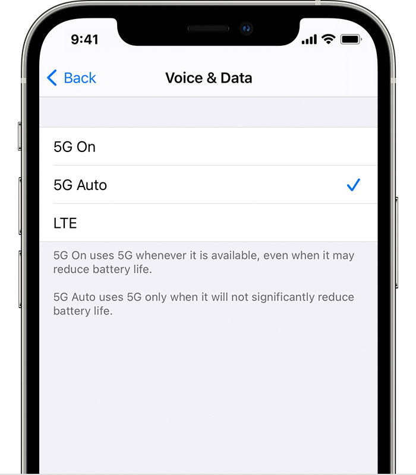
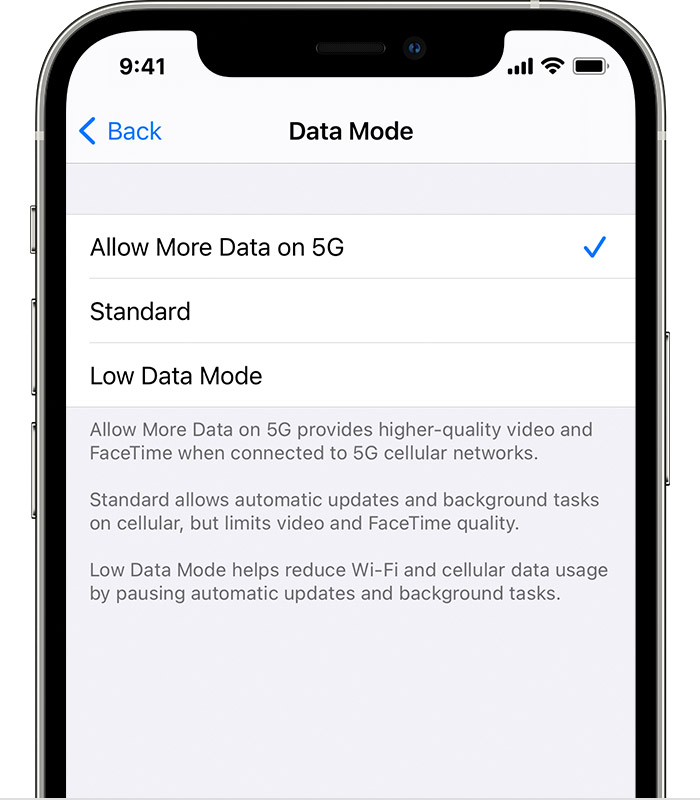
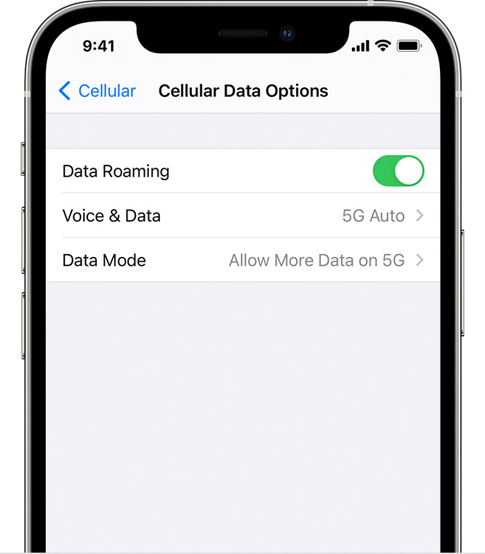

Does the iPhone 12 support 5G?
Here's what you really need to know about 5G-Compatible Cell Phones.
Apple CEO Tim Cook announces the launch of the iPhone 12, which is the first iPhone enabled to harness the power of the 5G network.
5G is the fifth generation in wireless technology that promises to be a faster, more responsive, and highly reliable network. As with previous wireless technologies, 5G is a great big network that will change our lives in ways we never considered and unleash a wave of innovation. With this innovation comes new 5G compatible devices. 5G service requires a compatible 5G phone and plan.
The most noticeable improvement with 5G over what the iPhone offers today is faster connectivity, hence Apple's "Hi, Speed" invite. 5G can run between 10 and 100 times faster than your typical 4G cellular connection, making downloads and video streaming snappier than ever. Importantly, 5G's latency -- the amount of time between when your phone pings the network and when the network responds is much faster than what 4G and even Wi-Fi provide. Apple typically isn't the first to introduce new technology, like mobile payments and wireless charging. It was at least a generation behind in adopting 3G and 4G LTE cellular capabilities in earlier iPhones. But once it jumps in, it tends to dominate and shape the market in ways other handset makers can't.
How do you turn off 5Ge on an iPhone XS?
Right now, 4G LTE (Long Term Evolution) technology is only capable of using lower frequency bands, operating up to 6GHz, whereas the radio bands that 5G will be able to handle will be anywhere between 30GHz and 300GHz1.
How can i tell if my phone is 5g?
To know if your phone is 5G is to Google up its specs online. You’ll most likely land on Gsmarena which boosts the biggest database of smartphones specs in the world. 5G the much-hyped next generation of mobile technology is here. A growing number of countries including the U.S, Canda, China, India, U.K, South Africa, Japan, South Korea have piloted some form of 5G network.
Gsmarena
if your network provider is Verizon, you must check if the 5G phone you are getting supports mmWave; otherwise, the phone's performance will not be as fast, although it covers a wider area. According to OpenSignal's report on 5G network performance, Verizon may have the fastest 5G, but the poorest availability on 5G network. In contrast, T-Mobile has the most extensive 5G reach, but the speed is only slightly faster than LTE.
According to Toms Guide, aside from 5G networks, buyers must also consider the processor, screen size, cameras, and other specs, just like when buying a regular smartphone. However, since 5G can exhaust the phone's power much faster than regular smartphones, it is highly significant to get high performing battery.
Use 5G with your iPhone

Voice & Data: Choose how your iPhone uses the 5G network, which can affect battery life.
Data Mode: Allow More Data on 5G: Enables higher data-usage features for apps and system tasks.


Cellular Data Options: If you don't see 5G in the status bar, Make sure that you’re in an area with 5G coverage
Everything You Need to Know About Charging the iPhone 12
The latest Apple iPhone doesn't ship with a power adapter, but does support Apple's new wireless MagSafe charging? Whether you use a cable or not, these are the fastest ways to charge the iPhone 12. With iPhone 12, power adapters are no longer included in every box, as Apple moves to reduce package waste (and make some cash on accessories).